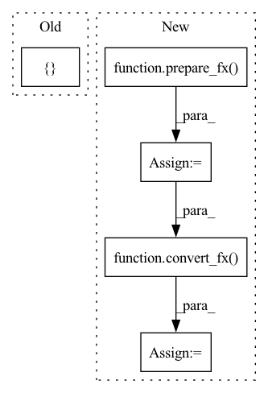

Pattern ID :3524

Before Change
qconfig_dict = {
"": default_qconfig,
"custom_module_class":
[(CustomModule, ObservedCustomModule, QuantizedCustomModule)]}
// check prepared model
m = prepare_fx(original_m, qconfig_dict)
// calibration
After Change
}
}
// check prepared model
m = prepare_fx(
original_m,
qconfig_dict,
prepare_custom_config_dict=prepare_custom_config_dict)
// calibration
m(data)
// all activation observers are inserted in the top level module
count_check = {
ns.call_module(torch.quantization.MinMaxObserver): 3
}
self.checkGraphModuleNodes(m, expected_node_occurrence=count_check)
// check converted/quantized model
m = convert_fx(
m,
convert_custom_config_dict=convert_custom_config_dict)
count_check = {
ns.call_function(torch.quantize_per_tensor) : 1,
ns.call_module(nnq.Conv2d) : 1,
ns.call_method("dequantize") : 1,
In pattern: SUPERPATTERN
Frequency: 3
Non-data size: 5
Instances
Fragment ID: 13480604
Project Name: pytorch/pytorch
Commit Name: 49903a5cd5dc39b44466b7fa78dfa5a29e21a038
Time: 2020-10-14
Author: jerryzh@fb.com
File Name: test/quantization/test_quantize_fx.py
M Class Name: TestQuantizeFx
N Class Name: TestQuantizeFx
M Method Name: test_custom_module_class(1)
N Method Name: test_custom_module_class(1)
M Parent Class: QuantizationTestCase
N Parent Class: QuantizationTestCase
M File Name: test/quantization/test_quantize_fx.py
N File Name: test/quantization/test_quantize_fx.py
M Start Line: 710
M End Line: 734
N Start Line: 710
N End Line: 748
'>
Before Change
model = symbolic_trace(M().eval())
qconfig_dict = {"": default_qconfig}
non_inplace_model = quantize_static_fx(
model, qconfig_dict, test_only_eval_fn, [self.img_data_2d], inplace=False)
inplace_model = model
inplace_model = quantize_static_fx(
inplace_model, qconfig_dict, test_only_eval_fn, [self.img_data_2d], inplace=True)
After Change
test_only_eval_fn(model, self.img_data_2d)
non_inplace_model = convert_fx(prepared, inplace=True)
prepared = prepare_fx(
model, qconfig_dict, inplace=True)
test_only_eval_fn(model, self.img_data_2d)
inplace_model = convert_fx(prepared, inplace=True)
non_inplace_res = non_inplace_model(self.img_data_2d[0][0])
inplace_res = inplace_model(self.img_data_2d[0][0])
self.assertEqual(non_inplace_res, inplace_res)
'>
Fragment ID: 13480601
Project Name: pytorch/pytorch
Commit Name: ffcb0989e76798ddb893b9e156ae1113d2498bb5
Time: 2020-09-30
Author: jerryzh@fb.com
File Name: test/quantization/test_quantize_fx.py
M Class Name: TestQuantizeFx
N Class Name: TestQuantizeFx
M Method Name: test_inplace_option(1)
N Method Name: test_inplace_option(1)
M Parent Class: QuantizationTestCase
N Parent Class: QuantizationTestCase
M File Name: test/quantization/test_quantize_fx.py
N File Name: test/quantization/test_quantize_fx.py
M Start Line: 296
M End Line: 302
N Start Line: 291
N End Line: 302
'>
Before Change
model = symbolic_trace(M().eval())
qconfig_dict = {"": default_qconfig}
non_inplace_model = quantize_static_fx(
model, qconfig_dict, test_only_eval_fn, [self.img_data_2d], inplace=False)
inplace_model = model
inplace_model = quantize_static_fx(
inplace_model, qconfig_dict, test_only_eval_fn, [self.img_data_2d], inplace=True)
After Change
test_only_eval_fn(model, self.img_data_2d)
non_inplace_model = convert_fx(prepared, inplace=True)
prepared = prepare_fx(
model, qconfig_dict, inplace=True)
test_only_eval_fn(model, self.img_data_2d)
inplace_model = convert_fx(prepared, inplace=True)
non_inplace_res = non_inplace_model(self.img_data_2d[0][0])
inplace_res = inplace_model(self.img_data_2d[0][0])
self.assertEqual(non_inplace_res, inplace_res)
'>
Fragment ID: 13480603
Project Name: pytorch/pytorch
Commit Name: 4f685ecc25ee1e723e45b824e58118721122891a
Time: 2020-10-01
Author: jerryzh@fb.com
File Name: test/quantization/test_quantize_fx.py
M Class Name: TestQuantizeFx
N Class Name: TestQuantizeFx
M Method Name: test_inplace_option(1)
N Method Name: test_inplace_option(1)
M Parent Class: QuantizationTestCase
N Parent Class: QuantizationTestCase
M File Name: test/quantization/test_quantize_fx.py
N File Name: test/quantization/test_quantize_fx.py
M Start Line: 296
M End Line: 302
N Start Line: 289
N End Line: 300